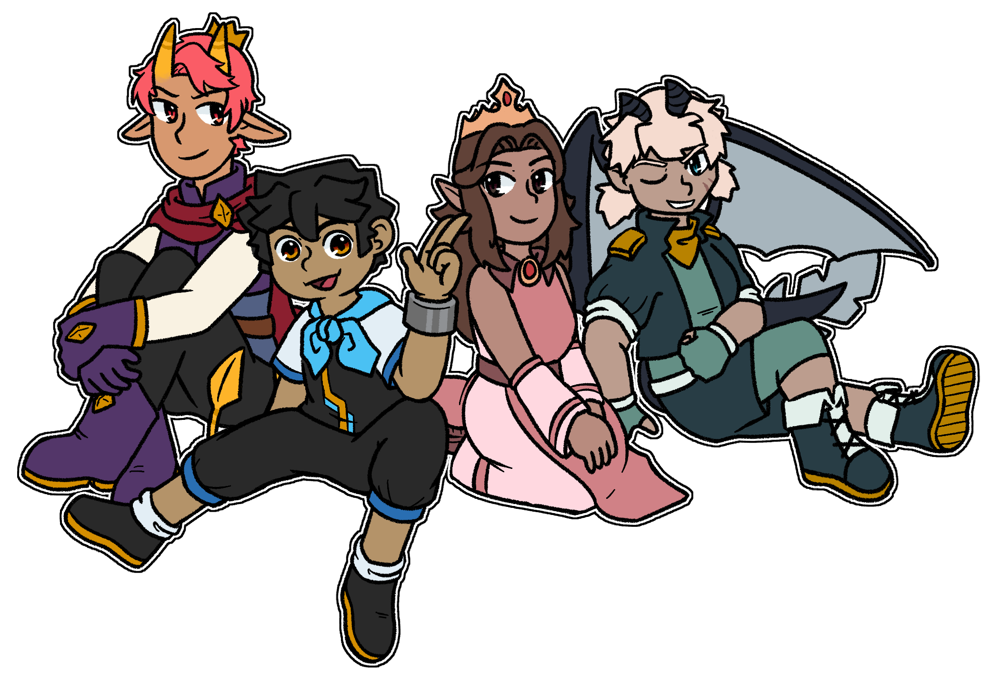

The all-too familiar tale about a bunch of guys saving the world!
Bolt from the Blue is a story told through a role-playing video game. As a result, the narrative leans into player input and combat-gated progression. The game has two different endings, with one serving as its "true" ending.
 The story is told through the eyes of Raiden, a plucky and empathetic woman with no recollection of her past. Though she may come off as suspicious or unreliable due to her lack of memories, she is quick to prove herself as trustworthy through her kindness. Raiden's closest friend is Araceli, the sharp-witted princess of Cieliso. As the heir to such a large kingdom, Araceli holds great responsibility on her shoulders - responsibility that she would abandon in favor of a greater journey alongside Raiden. The two are joined by Saffron, a fellow noble who is seeking out the meaning behind an ancient artifact and prophecy, and Cole, a lone-wolf pirate who seems to be hiding more than she lets on. With dreams of knowledge, fame and treasure, the four make their way across the realm as unlikely (but compatible) allies.
The world of Luxos is much bigger than just Raiden, Araceli, Saffron and Cole, however. The Beastlords that once calmly governed the natural world of Luxos have begun acting strange, endangering its inhabitants. The disarray is caused by an unknown party whose only lead is a declared goal - to capture Raiden, dead or alive. Though the question of her role and fate remain large, Raiden and her friends intend on solving that mystery together as friends. However, what was once a lighthearted journey soon evolves into an adventure into the very heart of Luxos as frivolous goals of justice, glory and riches reveal themselves to be connected to something far greater.